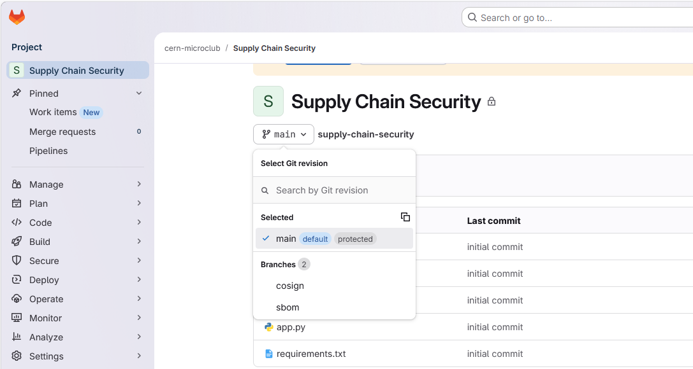

Contexte
Premier stage orienté découverte du développement web. Découverte de l’environnement professionnel et des bases du développement frontend.
Missions réalisées
- Création de pages web en HTML / CSS
- Structuration de contenu
- Ajout d’interactions simples en JavaScript
Compétences acquises
- Maîtrise des bases du frontend
- Compréhension du fonctionnement d’un site web
- Organisation du code
Exemples visuels

